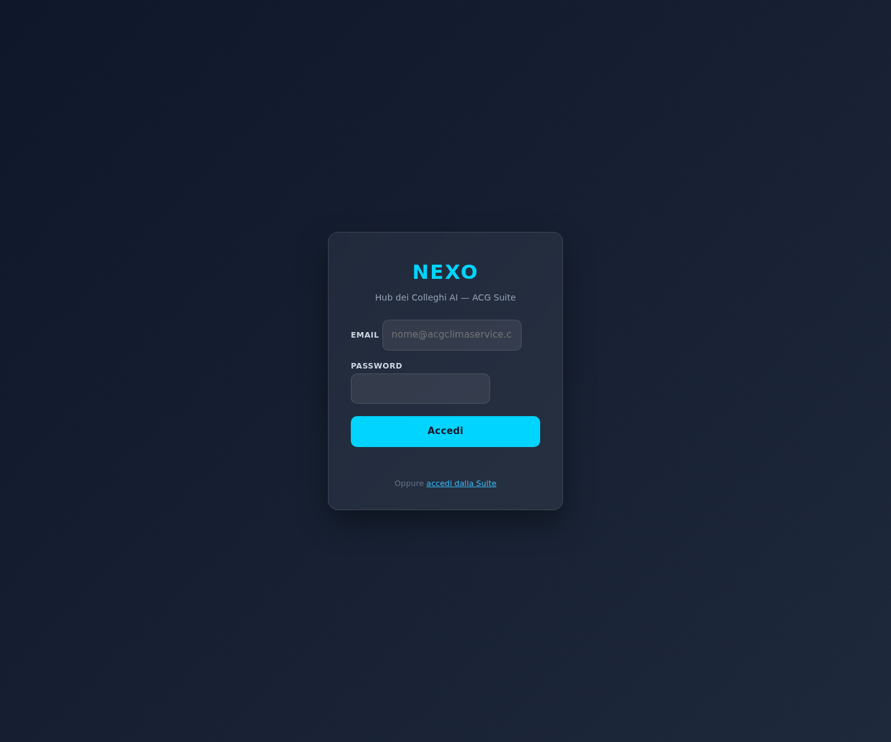

context/memo-campagne-cosmina.mdhandleChronosCampagne + handleChronosListaCampagne in handlers/chronos.js"come va la campagna X?", "campagne attive"chronosCampagneDashboard (auth required)| Campagna | Totale | Completati | Programmati | Scaduti | Da Programmare | % |
|---|---|---|---|---|---|---|
| SPEGNIMENTO 2026 | 407 | 405 | 0 | 2 | 0 | 100% |
| Letture WalkBy ACG FS 2026 | 97 | 0 | 55 | 25 | 17 | 0% |
| Letture WalkBy GZT FS 2026 | 13 | 0 | … | … | … | — |
| RIEMPIMENTI 2026 | 0 | — | — | — | — | nuova |
| SVUOTAMENTI 2026 | 0 | — | — | — | — | nuova |
📋 Campagna: Letture WalkBy ACG FS 2026 Fine Stagione 2026 Avanzamento: ░░░░░░░░░░░░░░░░░░░░ 0% completato · ✅ Completati: 0 · 📅 Programmati: 55 · ⚠️ Scaduti: 25 · 📝 Da Programmare: 17 · ❌ Non Fatti: 0 · 🚫 Da Non Fare: 0 ───────────── · Totale: 97 Per tecnico: MARCO=80, (non assegnato)=17
📋 Campagna: SPEGNIMENTO 2026 Spegnimento impianti termici stagione 2025/2026 Avanzamento: ████████████████████ 100% completato · ✅ Completati: 405 · 📅 Programmati: 0 · ⚠️ Scaduti: 2 · 📝 Da Programmare: 0 · ❌ Non Fatti: 0 · 🚫 Da Non Fare: 0 ───────────── · Totale: 407 Per tecnico: VICTOR=94, MARCO=76, FEDERICO=70, DAVID=48, LORENZO=46
📋 Campagne attive (7): 1. SPEGNIMENTO 2026 — 38 interventi 2. Letture WalkBy ACG FS 2026 — 13 interventi 3. Letture WalkBy GZT FS 2026 — 2 interventi 4. RIEMPIMENTI 2026 — 0 interventi 5. SVUOTAMENTI 2026 — 0 interventi 6. LETTURE DIRETTE FS — 0 interventi 7. Predisposizione antenne — 0 interventi
Nota: il count nella lista è basato su un filter ristretto (listName specifiche). Il count reale per campagna
viene calcolato in handleChronosCampagne con query dedicata su campagna_nome.

Gate login visibile (atteso senza credenziali). Dopo login si vede la dashboard con le card campagne.
[PWA CHRONOS page]
│ fetch con Bearer token
▼
chronosCampagneDashboard (Cloud Function europe-west1)
│ → verifyAcgIdToken()
▼
handleChronosListaCampagne() / handleChronosCampagne()
│ (in handlers/chronos.js)
▼
getCosminaDb().collection('cosmina_campagne')
.collection('bacheca_cards')
│ filter by campagna_nome / campagna_id
▼
classifyCampaignCard(card):
da_non_fare > non_fatto > completato > scaduto > programmato > da_programmare
aggregateCampaignStats(cards):
{ totale, completati, programmati, scaduti, da_programmare, non_fatti, da_non_fare }
+ perTecnico
context/memo-campagne-cosmina.md — mappa struttura campagne (schema, stati derivati, query patterns)scripts/memo_scan_campagne.py + .json — scansione COSMINAprojects/iris/functions/handlers/chronos.js — +180 righe (handler campagne)projects/iris/functions/handlers/nexus.js — routing "campagne attive" / "come va la campagna X"projects/iris/functions/index.js — Cloud Function chronosCampagneDashboardprojects/nexo-pwa/public/index.html — +200 righe (renderChronosPage + CSS card)